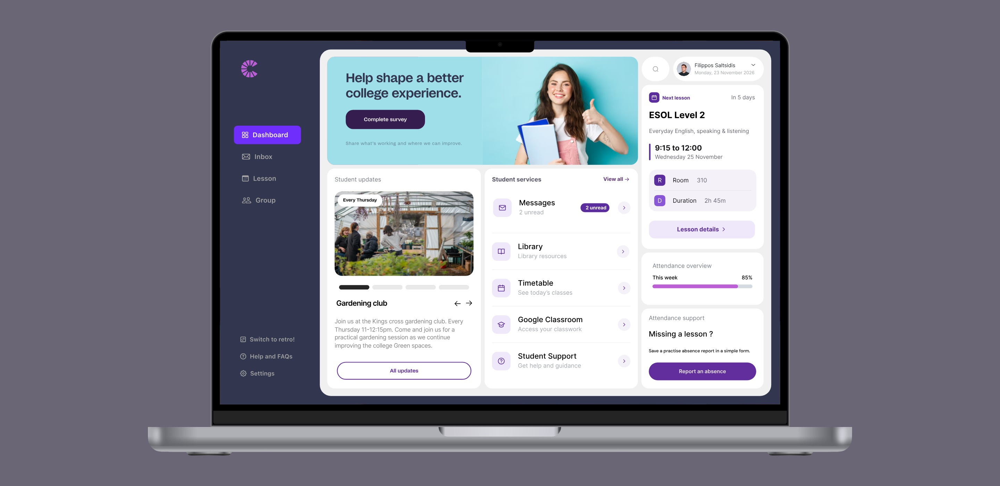
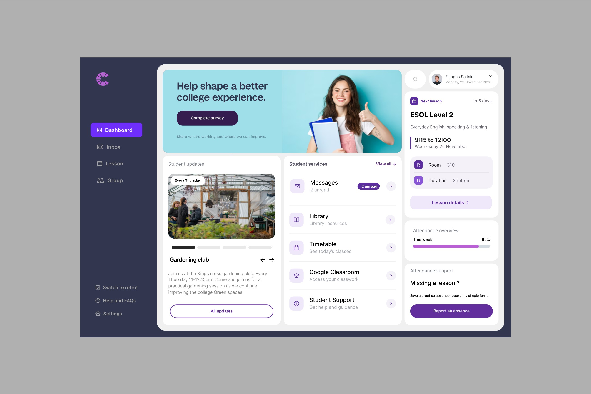

Redesigning a college dashboard students actually use
Students open the college portal to find their next lesson, but the old dashboard buries it in a wall of tiles. I redesigned the Capital City College student dashboard so students can find their next lesson, messages and attendance quickly, and report an absence without hunting for it.
